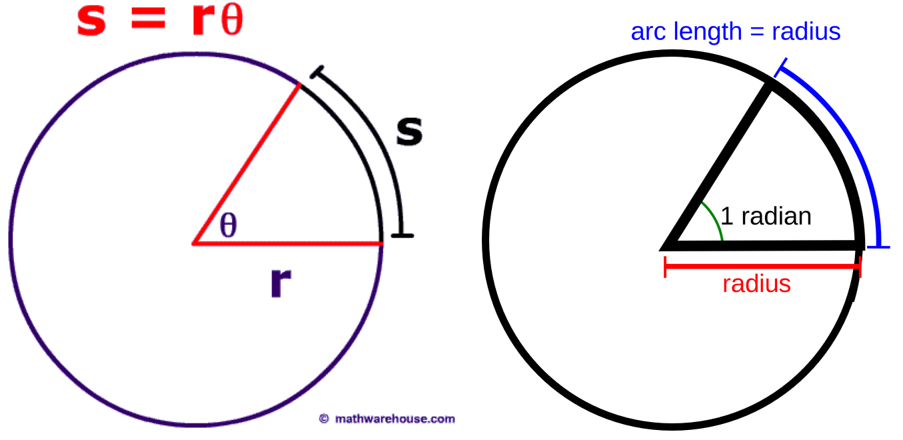
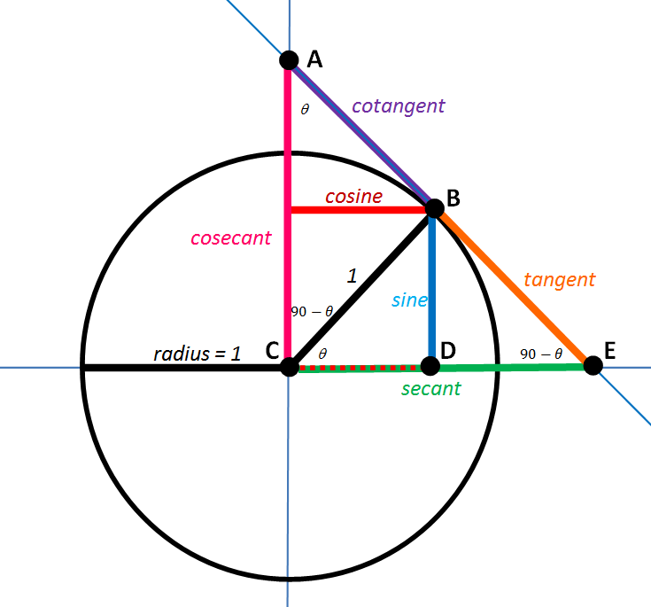

Spherical Astronomy and Coordinate Systems#
Sep 29, 2026 | 36 min read
The Celestial Sphere#
Historically speaking, the Celestial Sphere was the apparent surface of the heavens, on which the stars seem to be fixed. Nowadays, the term Celestial sphere refers to an abstract construct used to describe the locations of objects in the sky.
The Celestial Sphere has an infinite radius, in the sense that all the objects on it are at the same endless distance. In other words, the distance of an object is not required to describe its position in the sky. For obvious mathematical reasons, it is easier to deal with a sphere with a unitary radius (think about trigonometry) rather than an infinite one. The centre of the Earth is the centre of the celestial sphere, and the sphere’s pole and equatorial plane are coincident with those of the Earth.
Dealing with a sphere with unitary radius is not dissimilar to dealing with a circle with unitary radius, which is the goal of trigonometry. For this reason, we talk about spherical trigonometry, also called spherical astronomy when referring to the Celestial Sphere.
Trigonometry#
Trigonometry is the branch of mathematics concerned with specific functions of angles and their application to calculations. Considering a circle with radius \(r\), the arc \(s\) subtended on the circle by an angle \(\theta\) is equal to the radius multiplied by the angle \(s = r \theta\). The first plot in Figure 1 exemplifies this case. For this to work, the angle \(\theta\) must be a dimensionless quantity. We can see that \(s=r\) for \(\theta = 1\), we thus define one radian as the angle formed at the centre of a circle by an arc whose length is equal to the radius of the circle (second plot in Figure 1). Following this definition, an angle of 360° is equal to \(2 \pi\), thus 1 radian = 57.296°.


Basic concepts of trigonometry.#
Figure 2 shows the relationship among the sine (\(\sin\)), cosine (\(\cos\)), and tangent (\(\tan\)) trigonometric functions. The secant function (\(\sec\)), equivalente to the reciprocal of the cosine, \(\sec\theta=1/\cos\theta\), is of relevance for Astronomy.


Wikipedia link to trigonometric functionsThe most essential trigonometric functions Wikipedia link to trigonometric functions#
There are four standards to represent angles in Astronomy:
Radians: the standard way. Angles are measured between \(0\) and \(2 \pi\) radians. Radians are the only accepted input by trigonometric functions.
Decimal degrees: angles vary between \(0\) and \(360°\). Given \(\alpha\) the value of the angle in radians and \(\beta\) the same angle in decimal degrees, the relationship between the two is \(\beta = \alpha * 180 / \pi\)
Degrees (dms): it is a sexagesimal system where the angles still vary between \(0\) and \(360°\), but fractions of a degree are expressed as separate numbers rather than decimal figures. One degree is divided in \(60\) arcminutes (denoted with the symbol \('\)), one arcminute is divided in 60 arcseconds (symbol \(''\)). Fractions of arcseconds are expressed as a decimal part. The conversion from decimal degrees to sexagesimal degrees is obtained through several steps:
The whole number part of your decimal degrees gives you the degrees in dms system.
Multiply by 60 the decimal part of your decimal degrees. The whole number part of the result is arcminutes.
Multiply the decimal part of the last result by 60 to convert it to arcseconds. The sign is positioned before the degrees. The whole number part is the part before the decimal sign (e.g., \(47\) in \(47.73\), \(-17\) in \(-17.43\)), the decimal part is the one after the decimal sign. The inverse conversion is much simpler: \(\beta=\operatorname{sgn}(\beta)(|d|+m/60+s/3600)\), with minutes and seconds non-negative. The sign must be retained separately for a negative angle whose degree field is zero.
Hours (dhms): again a sexagesimal system, with angles measured between \(0\) and \(24\) hours. Thus, one hour corresponds to 15 degrees. To avoid confusion with the degree (dms) system, the units composing an hour are called minutes and seconds rather than arcminutes and arcseconds. The conversion from decimal degrees to sexagesimal degrees is obtained through four steps:
Divide the decimal degrees by 15 to get the value in decimal hours.
The whole number part of your decimal hours gives you the hours in hms system.
Multiply by 60 the decimal part of your decimal hours. The whole number part of the result is the minutes.
Multiply the decimal part of the last result by 60 to convert it to seconds.
The inverse conversion is much simpler: \(\beta=\operatorname{sgn}(\beta)(|h|+m/60+s/3600)*15 \), with minutes and seconds non-negative. The sign must be retained separately for a negative angle whose degree field is zero.

Graphical representation of angles in degrees, radians, and hours.#
Spherical trigonometry#
Consider a sphere with radius \(r\) and centred at \(C\).
A plane passing through the centre of the sphere \(C\) divides the sphere into two identical parts, called hemispheres. The intersection of this plane with the sphere is called a great circle. A great circle always separates two hemispheres. Consider now the perpendicular (or normal) to the same plane and passing to the center \(C\): the intersection \(P\) and \(P'\) between this normal and the sphere are called poles .
The intersection between the sphere and any other plane not passing through the centre \(C\) is called a small circle.
The shortest path between two points on a sphere \(Q\) and \(Q'\) is always along a great circle.

Representation of a great circle and a small circle.#
If you identify three points on the surface of the sphere, and connect them with great circles, you obtain a spherical triangle. Considering the spherical triangle in the figure, the angle c subtended by the arc AB is called the central angle and is measured in radians or degrees.
The length of the arc AB is equal to the radius of the sphere multiplied by the subtended central angle, \(AB = r* c\). If we consider a sphere with unit radius (\(r=1\)), then \(AB = c\), and we can measure the arc AB in radians or degrees.

A spherical triangle \(ABC\) identified by the three arcs \(a\), \(b\), \(c\) and the corresponding central angles.#
Other properties of spherical triangles:
The sum of the internal angles is always greater than \(\pi\) (\(180°\)).
The spherical excess \(E\) is defined as the sum of the internal angles of the spherical triangle, minus \(\pi\), \(E = A + B + C - \pi\).
The area of the spherical triangle is equal to \(E r^2\).
The *area of the sphere is equal to \(4\pi r^2\)
If we assume \(r=1\), as for example with the celestial sphere, we have that a portion of the sky identified by a spherical triangle has area equal to \(E\). Equivalently to the radians for an arc length, we can measure this area as steradians, if the central angles are expressed in radians. If the area of a spherical triangle is \(Er^2\), then the corresponding solid angle is \(E\) steradians. The full celestial sphere subtends \(4\pi\) steradians. An octant of the sphere, with three right angles, provides a check: \(E=3\pi/2-\pi=\pi/2\).
From now on, we will always assume \(r=1\).
Coordinate systems#
To describe the position of points in space using numbers (called coordinates), we need to define a reference structure so that every point can be uniquely identified. This mathematical framework is called coordinate system.
Let’s suppose we want to identify the position of a point on the surface of a sphere with unit radius. In this specific case, we need only two ingredients to define a coordinate system:
The direction of the perpendicular of a plane passing through the centre of the sphere (\(z\) in the figure).
The direction of one axis lying on the plane (\(x\) in the figure)
The perpendicular is often called normal. The definition of the plane alone is not sufficient; we also need to define the positive and negative sides of the hemispheres identified by the plane.

The angles \(\psi\) and \(\theta\) uniquely identify a point P on the sphere, assuming that the size of the sphere is fixed. Transformations to a new coordinate system can be obtained by rotating two axes around the third one, for example, by rotating \(y\) and \(z\) by an angle \(\chi\) to \(y'\) and \(z'\) on the plane perpendicular to the axis \(x\).#
In such a system, a given point \(P\) is uniquely identified by two angles, \(\psi\) and \(\theta\), in Figure 6. In a three-dimensional space, you would need three coordinates to constrain the position of an object uniquely. In our specific case, two coordinates are sufficient because we assumed we are on the two-dimensional surface of a fixed sphere. The third coordinate, i.e., the radial distance from the centre, is always equal to \(1\).
Coordinate transformations can be obtained by successive rotations around a single axis. In Figure 6, the \(x\) is kept fixed (thus coinciding with \(x'\)), while the \(y\) and \(z\) axes are rotated around the origin by an angle \(\chi\) on the plane perpendicular to \(x\).

There is no general agreement on the definition of angles among disciplines. In Physics and Mathematics, the polar coordinate \(\theta\) is measured starting from the normal to the plane, rather than the plane itself. In Mathematics, the angles’ names \(\theta\) and \(\psi\) are swapped.#
The definitions of angles can vary across disciplines. Figure 7 shows the standard definition in Mathematics and Physics.
Geographic Coordinate Systems#
Geocentric coordinate system#
In this system, the Earth is assumed to be a perfect sphere. The plane perpendicular to the rotational axis of the planet and passing through its centre is called the Equatorial plane, and it is the reference plane in this system. The intersection between the Equatorial plane and the sphere (in this case, the Earth) identifies the Equator.
The rotational axis intersects the Earth at two points: the North Pole in the Northern Hemisphere and the South Pole in the Southern Hemisphere. The angular momentum vector of Earth points to the North Pole, following the right-hand rule. When viewed from the North Pole, Earth rotates counterclockwise.
Meridians are semi-circle from one pole to the opposite one. Parallels are small circles parallel to the Equator. \
The meridian passing through the Royal Observatory Greenwich defines the direction of the x axis on the equatorial plane. For this reason, this meridian takes the name of Prime Meridian.
The distance of a point on the surface of Earth (i.e., on the surface of the sphere) from the Equator, by definition measured across a great circle and hence through a great circle passing through the poles (as the arc connecting this point to the Equator must be perpendicular to the latter) is called Latitude. The latitude \(\phi\) is positive for points in the Northern hemisphere, and negative for points in the Southern hemisphere. Sometimes the letters N and S are used as a replacement for the sign. \(\phi\) is comprised between \(-90°\) and \(90°\). All the points on a Parallel have the same Latitude.
The Longitude is the distance from the Prime Meridian of the projection of the point on the Equator. First, you identify the projection on the Equator as the intersection between the Equator itself and a meridian passing through your point. Then, you measure the distance (over the surface of the sphere) from the Prime Meridian along the Equator. Longitude \(\lambda\) is measured counterclockwise on a range between \(-180°\) and \(180°\): it is positive for points East of the Prime Meridian, and negative for points West of the Prime Meridian. Sometimes, the sign is replaced by \(E\) for positive values, and \(W\) for negative values.

Geocentric coordinate system, with representation of Latitude \(\phi\) and Longitude \(\lambda\), Equator (latitude equal to zero) and Prime Meridian (longitude equal to zero).#
When reporting coordinates, Latitude is conventionally expressed first. The coordinates of Padova are :
Latitude |
Longitude |
|---|---|
\(45.40643°\) |
\(11.87676°\) |
\(45°\, 24' \, 23.17'' \) |
\(11°\, 52' \, 36.34'' \) |
\(45°\, 24' \, 23.17'' \) N |
\(11°\, 52' \, 36.34'' \) E |
Latitudes and Longitudes are both expressed in degrees, either in decimal form or in \(dms\) format.
Geodetic coordinate system#
The Geocentric coordinate system assumes that the Earth is a perfect sphere. However, all rotating bodies depart from a perfect sphere because their rotation creates centrifugal force that bulges them at the equator and flattens them at the poles. As a consequence, the equatorial radius (the distance of the surface from the centre, measured at the equator) will be greater than the polar radius (the distance of the surface from the centre, measured at one of the two poles). In a first approximation, we can assume axial symmetry around the rotation axis (all the parallels are perfect circles); in this case, the solid is called a oblate spheroid, or more commonly, just ellipsoid or spheroid. (Note: a prolate spheroid would have the polar radius larger than the equatorial radius.) The last two terms are the most common, though not entirely accurate. On our planet, the ellipsoid approximates the equilibrium shape of the oceans, as the real figure of Earth is more complicated than a simple rotationally symmetric solid.
The amount of flattening of a planet primarily depends on its composition and the time it takes to perform a full rotation around its axis (rotational period). The amount of flattening is usually parametrised at the fraction difference between the equatorial and polar radii, i.e., (equatorial-polar)/equatorial. See Figure 9 for an extreme case in the Solar System. \
Planet |
Equatorial radius (Km) |
Polar Radius (Km) |
Difference (Km) |
Flattening |
|---|---|---|---|---|
Earth |
\(6378.137\) |
\(6356.752\) |
\(21.385\) |
\(3.35 \cdot 10^{-3}\) |
Saturn |
\(60268\) |
\(54364\) |
\(5904\) |
\(0.10\) |

The planet Saturn has a mean density below that of water, and it completes a rotation in 10 hours and 34 minutes. As a consequence, its flattening can be seen with the naked eye. The purple circle and the two orange axes highlight the 10% flattening of the planet.#
The oblateness of our planet introduces a problem in measuring the coordinates of an object when its distance from the surface changes. In a sphere, we can increase or decrease the distance of a point along any line passing through the centre without changing its geocentric coordinates. In other words, the coordinates are independent of the object’s altitude, measured as a distance from the surface along a vertical (a line perpendicular to the surface). This is no longer the case in an ellipsoid, as illustrated in Figure 10: for example, compare the angle with respect to the ellipsoid’s centre for an object on the surface (green line) with the same object at altitude \(h\) (blue line). \(\phi_c\) changes with the altitudes of an object, i.e., the latitude changes even if the object is moving vertically to the surface.

Geodetic coordinates.#
The local normal and geodetic latitude#
The solution to the altitude dependence discussed above is to define latitude using the normal to the reference ellipsoid, rather than the line joining the observer to the centre of the Earth. Consider a point on the ellipsoid and the plane tangent to its surface at that point. The perpendicular to this plane defines the geodetic vertical. The angle between this vertical and the equatorial plane is the geodetic latitude, which we will denote by \(\phi\), keeping \(\phi_c\) for the geocentric latitude.
An object situated at a height \(h\) along the same normal retains the same geodetic latitude and longitude. Its position is therefore specified by three coordinates: the geodetic latitude \(\phi\), the longitude \(\lambda\), and the ellipsoidal height \(h\). The longitude is unchanged with respect to the geocentric system, because both definitions use the same meridian planes. The height is measured along the ellipsoid normal, starting from the reference ellipsoid; it is not necessarily the height above sea level.2Barbieri and Bertini (2021), Section 2.1, pp. 19–24, especially the definitions of the vertical and the geodetic-to-geocentric conversion; Karttunen et al. (2017), Section 2.2, pp. 14–16.
The distinction between the two latitudes can be obtained directly from the equation of an ellipse. Let \(a\) and \(b\) be the equatorial and polar radii, respectively, and let \(\rho\) be the distance from the rotation axis. In a meridian plane, the surface of the ellipsoid satisfies
The geocentric latitude satisfies \(\tan\phi_c=z/\rho\). The normal to this ellipse is parallel to the vector \((\rho/a^2,z/b^2)\), so that
where \(e\) is the eccentricity of the meridian ellipse. It is related to the flattening \(f\) by
These relations between the latitudes apply to points on the ellipsoid, where \(h=0\). Since \(b<a\), the absolute value of the geodetic latitude is greater than the absolute value of the geocentric latitude, except at the Equator and the poles, where the two coincide. In the Northern hemisphere, \(\phi>\phi_c\); in the Southern hemisphere, both are negative and \(\phi<\phi_c\). On Earth, the difference reaches approximately \(11.5'\) near a latitude of \(45°\). Although the flattening is small, this difference cannot be neglected in accurate positional measurements.
For completeness, we can include the height explicitly. Define the radius of curvature in the direction perpendicular to the meridian, usually called the prime vertical radius of curvature,
The geocentric Cartesian coordinates of a point with geodetic coordinates \((\phi,\lambda,h)\) are then
Consequently,
This equation expresses the effect illustrated in Figure 10: changing \(h\) at fixed geodetic coordinates changes the direction from the centre of the Earth to the object.
Ellipsoid, geoid, and astronomical vertical#
The ellipsoid provides a simple mathematical surface, but the Earth’s mass is not distributed with perfect rotational symmetry. Mountains, ocean basins, and variations in density inside the planet affect the gravitational field. The direction indicated by a plumb line therefore does not, in general, coincide exactly with the normal to the reference ellipsoid.
The geoid is a particular equipotential surface of the Earth’s gravity field, including the centrifugal contribution associated with rotation. It approximates mean sea level and is continued beneath the continents. It should not be confused with the physical surface of the continents or with the instantaneous sea surface, which is affected by tides, winds, and currents. The astronomical vertical is defined by the local direction of gravity; its upward direction identifies the astronomical zenith. The angle between this upward direction and the equatorial plane defines the astronomical latitude. The angular separation between the astronomical and geodetic verticals is called the deflection of the vertical.
For many introductory calculations, the astronomical and geodetic latitudes can be treated as equal. Conceptually, however, they describe different things: one is determined by gravity, while the other is determined by the geometry of the adopted ellipsoid. This distinction becomes important when an observatory position is used to predict precise directions on the sky.

The reference ellipsoid, geoid, and physical surface of the Earth. The departures of the geoid from the ellipsoid are exaggerated in the schematic representation and do not show measured gravity data. The local diagram illustrates the ellipsoidal height \(h\), the height above the geoid \(H\), and the geoid undulation \(N\).#
The separation between the geoid and the reference ellipsoid is called the geoid undulation, conventionally denoted by \(N\). It is positive when the geoid lies above the ellipsoid. To the accuracy required here, the ellipsoidal height \(h\) and the orthometric height \(H\), usually interpreted as height above mean sea level, are related by
This is the local geometric relation shown in Figure 11. A more precise treatment must account for the different directions of the ellipsoid normal and the gravity vertical. For example, if \(h=120\,\mathrm{m}\) and \(N=40\,\mathrm{m}\), the corresponding height above the geoid is approximately \(80\,\mathrm{m}\). A height obtained from satellite positioning therefore requires a geoid model before it can be interpreted as a height above sea level.
The World Geodetic System#
A practical terrestrial coordinate system requires more than a choice of latitude and longitude. We must specify the position of the origin, the directions of the axes, and the reference surface used to express heights. The World Geodetic System 1984, usually abbreviated as WGS 84, provides such a framework. It is widely used for satellite positioning and for reporting geographic coordinates.3Barbieri and Bertini (2021), Section 2.1, pp. 19–24, including the WGS 84 ellipsoid and the distinction between EGM96 and EGM2008. The presentation’s model names and resolutions have been reconciled with this discussion.
Its origin is at the Earth’s centre of mass. The \(z\) axis follows the adopted terrestrial reference pole; the \(x\) axis lies in the reference equatorial plane and points toward the zero-longitude meridian; the \(y\) axis completes a right-handed system. These axes rotate with the Earth. An observatory attached to the ground therefore has approximately constant terrestrial coordinates, even though its direction relative to the stars changes throughout the day.
The reference ellipsoid has an equatorial radius of \(6378.137\,\mathrm{km}\) and a polar radius of approximately \(6356.752\,\mathrm{km}\), corresponding to \(f\simeq1/298.26\). These parameters describe the smooth reference surface. The geoid is supplied by a gravity model and is a separate element of the conversion between ellipsoidal and physical heights.
The modern zero of longitude is defined by the IERS Reference Meridian. It is close to the historical Greenwich meridian, but the two are not identical. The historical meridian was established by astronomical observations tied to the local gravity vertical, whereas the modern reference is part of a global geocentric system. Thus, even a familiar coordinate such as longitude depends on the precise reference system in which it is reported.
The Earth Gravitational Model#
An Earth Gravitational Model describes the spatial variations of the Earth’s gravity field. From this model, we can derive the geoid height relative to a reference ellipsoid, or represent departures of the gravity field from a chosen reference field. These are related quantities, but a map of geoid heights and a map of gravity anomalies have different units and should not be confused.
The mathematical description commonly uses spherical harmonics, functions defined over a sphere that represent variations on different angular scales. Low-degree terms describe broad features, while higher-degree terms describe finer structure. The degree of the expansion therefore influences the spatial resolution of the model.
The sequence discussed in the reference textbook includes EGM96, expanded to degree 360 with a spatial resolution of approximately \(100\,\mathrm{km}\), and EGM2008, whose much higher-degree expansion resolves features on scales of approximately \(10\,\mathrm{km}\). These names identify specific models, rather than successive definitions of latitude and longitude. In particular, the degree-360 expansion belongs to EGM96 and should not be assigned to EGM2008. The mention of “EGM2009” in the presentation is treated here as a typographical error.[3]
Satellite missions such as CHAMP, GRACE, and GOCE have contributed measurements of the Earth’s gravity field. Their observations complement measurements made at the surface and help constrain both its large-scale structure and its variations. For the purposes of spherical astronomy, the central result is that the observer’s geometric position, height above sea level, and local vertical require related but distinct definitions.
Celestial Coordinate Systems#
We can now apply the same geometric ideas to the celestial sphere. Each system requires a reference plane, a choice of positive pole, and a zero direction in that plane. Two angular coordinates then identify the direction of an object. In the systems considered below, one angle is measured along the reference circle, and the other is measured perpendicular to it along a great circle.
There is another choice that must be stated explicitly: the origin from which the object is observed. A topocentric system is centred on the observer, a geocentric system on the centre of the Earth, and a heliocentric system on the centre of the Sun. For distant stars, the differences may be negligible in an introductory treatment. For the Moon, planets, and nearby artificial satellites, changing the origin can change the observed direction through parallax.
A change in the orientation of the axes is a rotation. A change in origin is a translation and generally requires the distance to the object as well as its angular coordinates. The names equatorial, ecliptic, and galactic describe the orientation of a system; by themselves, they do not specify every aspect of the origin or of the reference frame.
Horizontal coordinates#
The most immediate way to describe the sky is to use the observer’s local vertical. The plane passing through the observer and perpendicular to this vertical is the horizontal plane. Its intersection with the celestial sphere is the astronomical horizon. This system is topocentric and is also called the horizon system or altitude-azimuth system.4Karttunen et al. (2017), Sections 2.3–2.4, pp. 16–17; Hanslmeier (2023), Section 2.1.2, pp. 6–7. Azimuth conventions differ across the sources; the equations here consistently use North through East.
The two poles of the horizon are the zenith, directly above the observer, and the nadir, in the opposite direction. A great circle passing through the zenith and nadir is called a vertical circle. The vertical circle containing the celestial poles is the local meridian; it intersects the horizon at the North and South points. The East and West points lie \(90°\) from these along the horizon. At the geographic poles, some of these directional conventions become degenerate and require a chosen reference meridian.
The altitude, or elevation, is the angle measured from the horizon to the object along its vertical circle. Following the notation of the presentation, we denote it by \(a\):
An object on the horizon has \(a=0°\), an object at the zenith has \(a=90°\), and an object with \(a<0°\) lies below the astronomical horizon. The complementary angle is the zenith distance,
The azimuth \(A\) specifies the direction of the object’s vertical circle around the horizon. We will measure it from North toward East, over the interval \(0°\leq A<360°\). Therefore, North corresponds to \(A=0°\), East to \(90°\), South to \(180°\), and West to \(270°\). This convention is common, but not universal: some astronomical texts measure azimuth from South toward West. Equations must always be used with the convention for which they were derived.

The horizontal coordinate system, centred on the observer. Azimuth \(A\) is measured from North toward East along the horizon, while altitude \(a\) is measured upward along the object’s vertical circle. The zenith distance is \(z=90°-a\).#
For example, a star with \(A=90°\) and \(a=30°\) lies due East, one third of the angular distance from the horizon to the zenith. At the zenith itself, all vertical circles meet and azimuth is undefined. This is a coordinate singularity, rather than an uncertainty in the actual direction of the star.
The astronomical horizon is a geometric reference, not the visible outline of the landscape. Mountains can obscure objects with positive altitude, and an observer above the sea can see a sea horizon below the astronomical horizon. In addition, atmospheric refraction generally makes an object appear at a higher altitude than its unrefracted direction. We will use geometric, unrefracted directions in the coordinate transformations below.
Both altitude and azimuth generally change as the Earth rotates. They also depend on the observer’s location. Consequently, horizontal coordinates are convenient for pointing a telescope at a particular time and place, but a catalogue must use a reference system that does not rotate with the local horizon.
Zenith distance and airmass#
The zenith distance also determines how much atmosphere the light must cross. The airmass \(X\) is the atmospheric column along the line of sight divided by the column in the zenith direction, for the same observing site. It is a dimensionless relative quantity, with \(X=1\) at the zenith.
Consider an atmosphere represented by horizontal, plane-parallel layers. A layer of vertical thickness \(\mathrm{d}h\) is crossed along a distance \(\mathrm{d}s=\mathrm{d}h/\cos z\). If atmospheric density depends only on height and the light ray is taken to be straight, the ratio of the two column integrals is

The plane-parallel approximation to airmass. An inclined ray traverses a longer atmospheric path than a vertical ray. The curve shows \(X=\sec z\) within the illustrated range; it is an approximation and should not be extrapolated to the horizon.#
For \(a=90°\), \(60°\), and \(30°\), this approximation gives \(X=1\), \(1.15\), and \(2\), respectively. Observations at lower altitude generally suffer stronger atmospheric extinction and greater sensitivity to atmospheric conditions. This is one reason why observations are often scheduled near the time when an object reaches its greatest altitude.
The approximation becomes increasingly inaccurate toward the horizon. The Earth and its atmosphere are curved, and refraction bends the light path. The divergence of \(\sec z\) at \(z=90°\) is a limitation of the plane-parallel model, not an infinite atmospheric column in the real atmosphere. The expression is not applicable to objects below the horizon.5The plane-parallel expression is developed from the geometry stated on slide 16. For atmospheric refraction and extinction, see Hanslmeier (2023), Section 2.3.2, pp. 21–22, and Karttunen et al. (2017), the atmospheric discussion in Chapter 2 and the treatment of magnitudes and extinction in Chapter 4.
The celestial equator and the ecliptic#
The celestial equator is the intersection of the celestial sphere with the plane perpendicular to the Earth’s rotation axis. The North Celestial Pole and South Celestial Pole are the directions of that axis on the sphere. Neglecting slow changes in the axis and the motion of the objects themselves, stars appear to describe circles of constant angular distance from these poles as the Earth rotates.
The ecliptic is the great circle associated with the Earth’s orbital plane. To a geocentric observer, it describes the Sun’s annual path against the distant stars, to the approximation in which the orbital plane is fixed. Its inclination to the celestial equator is the obliquity of the ecliptic, denoted by \(\varepsilon\), approximately \(23°\,26'\) near the reference epoch J2000.0.
Two distinct great circles intersect at two opposite points. For the equator and ecliptic, these are the equinox points. The vernal point, usually denoted by \(\gamma\), is the intersection crossed by the Sun when it moves from the Southern to the Northern celestial hemisphere. The Sun passes through this direction at the March equinox. At the opposite intersection, it crosses from North to South at the September equinox.

The celestial equator and the ecliptic intersect at the equinox points. The vernal point \(\gamma\) is the ascending intersection of the Sun’s annual path with the equator. The angle between the planes, and between their corresponding north poles, is the obliquity \(\varepsilon\).#
The vernal point is a direction, not a physical object or a particular star. Its importance is that it lies in both reference planes and can therefore serve as the zero direction for two different coordinate systems. The words vernal and autumnal refer to the seasons in the Northern hemisphere; the geometric definition of the crossing applies equally to observers in either hemisphere.
Equatorial coordinates#
The equatorial coordinate system uses the celestial equator as its reference circle and the North Celestial Pole as its positive pole. Its two angular coordinates are the right ascension \(\alpha\) and the declination \(\delta\).6Barbieri and Bertini (2021), Sections 2.2–2.3, pp. 25–29; Karttunen et al. (2017), Section 2.5, pp. 17–20; Hanslmeier (2023), Sections 2.1.3 and 2.2.1, pp. 7–9 and 12–15.
The declination is measured from the equator along the great circle passing through the object and both celestial poles. Such a circle is called an hour circle. Declination is positive to the North and negative to the South:
The right ascension is measured from the vernal point eastward along the celestial equator to the object’s hour circle. Equivalently, it increases counterclockwise when the equatorial plane is viewed from the North Celestial Pole. It is usually expressed in hours, minutes, and seconds:
These hours are an angular unit. In particular, \(1^{\mathrm h}=15°\), \(1^{\mathrm m}=15'\), and \(1^{\mathrm s}=15''\). To convert decimal degrees to decimal hours, we divide by \(15\).

Equatorial coordinates of an object on the celestial sphere. Right ascension \(\alpha\) is measured eastward from \(\gamma\) along the celestial equator, and declination \(\delta\) is measured along the object’s hour circle. Declination is positive in the Northern celestial hemisphere.#
For example, \(\alpha=6^{\mathrm h}\) and \(\delta=30°\) specify a direction whose hour circle lies \(90°\) east of the vernal point and whose angular distance north of the equator is \(30°\). At a celestial pole, right ascension is undefined because all hour circles meet there.
Unlike horizontal coordinates, equatorial coordinates of a distant star do not change merely because the Earth rotates during the night. They are therefore suitable for catalogues and for comparing observations obtained at different sites. This statement assumes that we use the same reference frame and neglect effects such as stellar proper motion and parallax over the interval considered.
Hour angle and local sidereal time#
To connect a catalogue position to the local sky, we need to know how the observer’s meridian is oriented relative to the vernal point. This is the role of local sidereal time, which we denote by \(\Theta\). Geometrically, \(\Theta\) is the hour angle of the vernal point, or equivalently the right ascension of the direction on the equator currently crossing the observer’s upper meridian.
The hour angle \(t\) of an object is measured from the local upper meridian westward along the equator. Its direction of increase is opposite to that of right ascension. With all angles expressed in the same units,
We may instead express \(t\) in the interval \(-12^{\mathrm h}<t\leq12^{\mathrm h}\): a negative value then places the object east of the meridian, before upper transit, and a positive value places it west of the meridian, after upper transit. At upper culmination, \(t=0\) and \(\Theta=\alpha\). For instance, if the local sidereal time is \(10^{\mathrm h}\), a star with \(\alpha=8^{\mathrm h}\) has \(t=2^{\mathrm h}=30°\) and lies west of the meridian.
Sidereal time is tied to the rotation of the Earth relative to the celestial reference directions. It is not the civil time shown by an ordinary clock. A sidereal day is approximately \(23^{\mathrm h}56^{\mathrm m}4^{\mathrm s}\) of mean solar time. The difference arises because the Earth also moves around the Sun while it rotates.
For a terrestrial longitude \(\lambda\) taken as positive eastward, the local and Greenwich sidereal times satisfy
with the longitude converted to hours if the sidereal times are in hours, and the result reduced modulo \(24^{\mathrm h}\). This relation expresses why two observers at different longitudes see different objects on their meridians at the same instant.
From equatorial to horizontal coordinates#
The coordinate transformation depends on the observer’s latitude \(\phi\) and on the object’s hour angle \(t\). Here \(\phi\) is the astronomical latitude; for the present calculation, we neglect the deflection of the vertical and use the geodetic value. With azimuth measured from North toward East, the transformation is
The first relation gives the altitude. The other two determine the azimuth together, avoiding the ambiguity that would arise from using an inverse sine or cosine alone. In numerical calculations, this is conveniently done with the two-argument function \(\operatorname{atan2}(y,x)\), using the right-hand sides of the second and third equations as its first and second arguments. The resulting azimuth is then placed in the interval \(0°\leq A<360°\).7Barbieri and Bertini (2021), Section 3.1, pp. 36–39; Karttunen et al. (2017), Sections 2.5–2.6, pp. 17–23. The azimuth components have been written for the North-through-East convention used in this chapter.
At upper culmination, \(t=0\), and the altitude reduces to
For Padova, taking \(\phi\simeq45.41°\), a star at \(\delta=20°\) culminates at approximately \(64.59°\). A star at \(\delta=\phi\) passes through the zenith, whereas a star at the celestial equator culminates at approximately \(44.59°\). Setting \(\delta=90°\) in the transformation also shows that the altitude of the North Celestial Pole equals \(\phi\); in the Southern hemisphere, the altitude of the South Celestial Pole equals \(|\phi|\).
We can also determine whether an object crosses the horizon by setting \(a=0\):
For a non-polar observer and an object away from the celestial poles, two crossings occur when the right-hand side lies strictly between \(-1\) and \(1\). Equality corresponds to tangency at the horizon. If it lies outside this range, the object either remains above the horizon or never rises. In the Northern hemisphere, stars with \(\delta>90°-\phi\) are circumpolar, while those with \(\delta<-(90°-\phi)\) never rise. The corresponding statements in the Southern hemisphere follow by reversing the signs of both latitude and declination. These are geometric conditions; refraction and the local landscape modify actual visibility.
Reference epoch and reference frame#
The Earth’s rotation axis and orbital plane are not fixed for all time. Precession and nutation change the orientation of the equator and the position of the equinox. Consequently, a classical equatorial position must be associated with a specified equator and equinox, such as those of J2000.0. The epoch of a star’s position must also be stated when its proper motion is relevant. The epoch at which a position is valid and the orientation of the axes are distinct pieces of information.
Modern astrometry also uses the International Celestial Reference System, or ICRS, whose axes are defined through distant extragalactic reference sources and are close to the classical J2000.0 orientation. It should not be identified exactly with an equator and equinox of date. At the level of this chapter, the classical construction explains the geometry; precise catalogue work additionally requires the catalogue’s stated reference frame and epoch.
Ecliptic coordinates#
The ecliptic coordinate system takes the ecliptic as its reference plane. The directions perpendicular to this plane define the North Ecliptic Pole and South Ecliptic Pole. These must be distinguished from the celestial poles, which refer to the Earth’s rotation axis. The angle between the two north poles is \(\varepsilon\).8Barbieri and Bertini (2021), Section 2.5, pp. 29–31, and Section 3.2; Hanslmeier (2023), Sections 2.1.4 and 2.1.6, pp. 9–12.
The ecliptic longitude \(\lambda\) is measured from the vernal point along the ecliptic, eastward in the direction of the Sun’s annual motion, with \(0°\leq\lambda<360°\). The ecliptic latitude \(\beta\) is measured along a great circle perpendicular to the ecliptic, with \(-90°\leq\beta\leq90°\). It is positive toward the North Ecliptic Pole. The symbol \(\lambda\) is also used for terrestrial longitude, but the reference plane and the zero direction are different; the context determines which quantity is meant.

Ecliptic coordinates \(\lambda\) and \(\beta\). The vernal point provides the zero of longitude, as it provides the zero of right ascension. The positive pole is the North Ecliptic Pole, perpendicular to the Earth’s orbital plane.#
This system is particularly useful for Solar System objects because many of their orbital planes have relatively small inclinations to the ecliptic. The Sun has approximately \(\beta=0°\), while its ecliptic longitude completes one revolution in a year. Planets and the Moon generally have non-zero ecliptic latitudes because their orbits are inclined to the Earth’s orbital plane. Their apparent motion also depends on the observer’s changing position.
The geometric origin must still be specified. Geocentric ecliptic coordinates describe a direction from the Earth, while heliocentric ecliptic coordinates describe a direction from the Sun. Although their reference planes can be chosen parallel, their angular coordinates for the same nearby object need not be equal.
Relation to equatorial coordinates#
Equatorial and ecliptic coordinates share the zero direction \(\gamma\). If they also use the same origin and compatible reference planes, one system is obtained from the other by a rotation through the obliquity about that direction.
In a Cartesian ecliptic system, the unit vector toward an object is
With the \(x\) axis directed toward \(\gamma\), its components in the equatorial system are
The inverse transformation is obtained by replacing \(\varepsilon\) with \(-\varepsilon\). As before, both sine and cosine components should be used to recover the correct quadrant of a longitude. The rotation does not account for a change between geocentric and heliocentric origins.
For an object on the ecliptic, \(\beta=0\), and the last component gives \(\sin\delta=\sin\varepsilon\sin\lambda\). Applied to the Sun, this explains the four characteristic directions of its annual path:
Direction |
Ecliptic longitude \(\lambda\) |
Right ascension \(\alpha\) |
Declination \(\delta\) |
|---|---|---|---|
March equinox |
\(0°\) |
\(0^{\mathrm h}\) |
\(0°\) |
June solstice |
\(90°\) |
\(6^{\mathrm h}\) |
\(+\varepsilon\) |
September equinox |
\(180°\) |
\(12^{\mathrm h}\) |
\(0°\) |
December solstice |
\(270°\) |
\(18^{\mathrm h}\) |
\(-\varepsilon\) |
These relations use the ideal geometric orbit and the equator and ecliptic of the chosen date. They also show that right ascension and ecliptic longitude are different angular coordinates, even though both begin at the vernal point.
Galactic coordinates#
For studies of the Milky Way, a reference plane related to the Galaxy is often more useful than one related to the Earth’s rotation or orbit. The galactic coordinate system uses a conventional plane representing the orientation of the Galactic disc. The North Galactic Pole and South Galactic Pole are perpendicular to this plane.9Barbieri and Bertini (2021), Section 2.6, pp. 31–32; Karttunen et al. (2017), Section 2.7, pp. 23–25; Hanslmeier (2023), Section 2.1.5, p. 10. The approximate equatorial direction of the Galactic Centre also follows slide 20.
The galactic latitude \(b\) measures the angular distance from the galactic plane along a great circle, with \(-90°\leq b\leq90°\). The galactic longitude \(l\) is measured along the galactic equator from the adopted zero direction near the Galactic Centre, with \(0°\leq l<360°\). It increases counterclockwise when viewed from the North Galactic Pole.
In the elementary construction, the observer is placed at the Sun. Thus, the system describes directions as seen from the Solar neighbourhood. It is not a coordinate system centred on the Galactic Centre. The finite distance between the Earth and Sun can usually be neglected for the large-scale Galactic applications considered here, although precise observed positions still require an explicitly stated origin.

Galactic coordinates as seen from the Solar neighbourhood. The upper diagram shows the longitude directions in the Galactic plane; the lower diagram shows latitude measured above or below that plane. The construction is schematic, and the adopted longitude origin is represented by the direction toward the Galactic Centre.#
The direction \(l=0°\), \(b=0°\) lies toward the central regions of the Milky Way; \(l=180°\), \(b=0°\) points toward the Galactic anticentre. The directions \(l=90°\) and \(270°\) lie in the plane at right angles to the centre direction. Objects with \(b\) close to zero are seen near the Galactic plane, whereas objects with large \(|b|\) are seen away from it. As in the other systems, longitude is undefined at either pole.
The Galactic Centre lies approximately at \(\alpha=17^{\mathrm h}45.7^{\mathrm m}\) and \(\delta=-29°00'\) in J2000.0 equatorial coordinates. This approximate direction is sufficient for identifying the region of the sky. The exact conventional direction \((l,b)=(0°,0°)\) does not coincide precisely with the measured position of the compact radio source Sagittarius A*. The system was fixed by an adopted orientation; it is not continually redefined whenever measurements of the physical centre improve.
Likewise, the conventional galactic plane should not be interpreted as a perfectly flat material surface containing every Galactic object. The Milky Way has finite thickness and a more complicated structure, and the Sun is slightly displaced from the physical mid-plane. The coordinate system supplies a fixed geometric reference with which to describe that structure.
Galactic coordinates are useful for mapping stars, gas, dust, and diffuse radiation. A narrow concentration around \(b=0°\), for example, immediately reveals a population associated with the disc. However, an angular position alone does not tell us the object’s distance or its location within the Galaxy. To obtain a three-dimensional Galactocentric position, we must also specify the object’s distance, the position of the Sun relative to the Galactic Centre, and the adopted orientation of the Galactocentric axes.
Transforming between equatorial and galactic directions with the same origin is again a rotation of a unit vector. In contrast to the equatorial-ecliptic transformation, the two systems do not share their zero axis, so the transformation requires the full relative orientation of the two frames. The defining pole and zero-longitude direction must be expressed in the same equatorial reference frame as the input coordinates. Mixing, for example, a Galactic definition quoted in B1950.0 coordinates with untransformed J2000.0 coordinates introduces a systematic error.
Choosing a coordinate system#
The same direction on the sky can be described in any of these systems. The choice depends on the question we want to answer.
System |
Reference plane |
Zero direction |
Angular coordinates |
Typical application |
|---|---|---|---|---|
Horizontal |
Local horizontal plane |
North, with the convention used here |
Azimuth \(A\), altitude \(a\) |
Telescope pointing and visibility |
Equatorial |
Celestial equator |
Vernal point in the classical construction |
Right ascension \(\alpha\), declination \(\delta\) |
Stellar positions and catalogues |
Ecliptic |
Earth’s orbital plane |
Vernal point |
Longitude \(\lambda\), latitude \(\beta\) |
Apparent and orbital geometry in the Solar System |
Galactic |
Conventional Galactic plane |
Adopted direction near the Galactic Centre |
Longitude \(l\), latitude \(b\) |
Structure of the Milky Way |
The reference plane, angle convention, origin, and reference frame must all be consistent when coordinates are compared or transformed. A pair of numbers becomes an astronomical position only when these definitions are known.
Notes on the preserved introductory text#
The introductory text has been retained without alteration, including its unfinished transition before the discussion of the geoid. The following corrections specify the conventions and formulae to use when studying or applying that material:
In the conversion from decimal degrees to decimal hours, divide by 15, not by 24. For a signed sexagesimal angle, the sign applies to the entire magnitude: \(\beta=\operatorname{sgn}(\beta)(|d|+m/60+s/3600)\), with minutes and seconds non-negative. The sign must be retained separately for a negative angle whose degree field is zero.
For an ordinary convex spherical triangle bounded by minor great-circle arcs, the sum of the internal angles exceeds \(\pi\) radians, or \(180°\). Its spherical excess is \(E=A+B+C-\pi\), not \(A+B+C-2\pi\). The area is \(Er^2\), and its solid angle is \(E\) steradians. The full sphere subtends \(4\pi\) steradians. An octant of the sphere, with three right angles, provides a check: \(E=3\pi/2-\pi=\pi/2\).
The longitude of Padova quoted as \(+11.87676°\) corresponds to approximately \(11°\,52'\,36.34''\) E, not W.
A unit celestial sphere represents directions. Physical objects are not assumed to be at the same actual distance, and the observer need not always be at the Earth’s centre. A particular calculation must distinguish topocentric, geocentric, and other origins.
The secant is the reciprocal of the cosine, \(\sec\theta=1/\cos\theta\); it is not the inverse function \(\arccos\). Angle symbols are conventions that must be defined for each source, rather than universal rules separating Mathematics, Physics, and Astronomy. In Figure 6, the latitude-like angle is \(\theta\).
The astronomical plumb line and the ellipsoid normal agree only within an approximation. Likewise, the geoid represents an equipotential reference surface, rather than the physical topography of the whole Earth. These distinctions are made explicitly in the completed geodetic discussion.
References and figure sources#
The order of the main topics follows Lesson 01 - Spherical Astronomy and Coordinate Systems, slides 1–20. The explanation and formulae have been developed using the following textbooks; page numbers refer to the printed pages of the supplied editions.
Barbieri, C., and Bertini, I. (2021), Fundamentals of Astronomy, second edition, CRC Press. Chapters 1–3, especially Sections 2.1–2.6 for terrestrial and celestial systems and Sections 3.1–3.2 for coordinate transformations.
Karttunen, H., Kröger, P., Oja, H., Poutanen, M., and Donner, K. J. (eds., 2017), Fundamental Astronomy, sixth edition, Springer. Chapter 2, Spherical Astronomy, particularly the discussions of the Earth, horizontal and equatorial coordinates, and other coordinate systems.
Hanslmeier, A. (2023), Introduction to Astronomy and Astrophysics, Springer. Chapter 2, Spherical Astronomy, especially Sections 2.1–2.3.
Figures 1–3 are newly drawn geometric diagrams following the corresponding examples in slides 4–5. Figures 4–10 reproduce or convert the corresponding embedded illustrations in slides 6–12; original source markings are retained where present. Figures 11–17 are newly drawn scientific schematics based on the topics and geometric constructions in slides 12–20 and the textbooks above. They are illustrative diagrams rather than observational data. All figures are supplied in PNG format; a JPEG copy of Figure 8 is also provided to preserve the original Markdown reference.